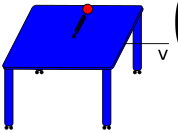

A moving reference frame with conservation of angular momentum#

A mass is connected to a spring on top of a table. The system is at rest with the spring unstretched oriented towards the top of the table, \(\theta(t=0) = 90^o\).
Then, the table is pushed so it has a constant velocity of \(v_0\). The mass was not pushed, so its initial velocity realtive to ground is \(\bar{0}\)
\(v_{P/O} = \bar{0} = v_O\hat{i} +v_{P/O'} \rightarrow v_{P/O'} = -v_0 \hat{i}\)
The table is moving at a constant speed and does not rotate. It is an inertial reference frame. You can apply Newton’s second law to the global coordinate system or the moving table coordinate system. This notebook predicts the motion of the point \(P\) after the table is pushed for
\(k = 16~N/m\) spring constant
\(m = 0.1~kg\) mass of object at point P
\(L_0 = 0.1\) unstretched spring length
\(v_0 = 1~m/s\) speed of the moving table
\(r_0 = L_0\) initial position of mass is \(\mathbf{r} = r_0\hat{e}_r\) where \(\hat{e}_r = 1\hat{j}\)
\(\dot{\theta}_0 = \frac{v_0}{r_0}\) initial angular velocity
Conservation of angular momentum in a moving system#
The spring does not create any moment on the system, so the angular momentum is constant.
\(\sum M_{O'} = 0 = \frac{d}{dt}\bar{h}_{O'}\)
\(h_{O'} = \mathbf{r}_{P/O'}\times m \mathbf{v}_{P/O'}\)
\(h_{O'} = mr^2\dot{\theta} = constant\)
Conservation of energy in moving system#
Ignoring friction and drag, you have a system with kinetic and potential energy, \(T~and~V\), respectively. There are no nonconservative forces acting on the system.
\(T = \frac{1}{2}mv^2 = \frac{m}{2}(\dot{r}^2 + r^2\dot{\theta}^2)\)
\(V = \frac{1}{2}k(r-l_0)^2\)
\(T_1 + V_1 = T(t) + V(t)\)
\(\frac{m}{2}(\dot{r_0}^2 + r^2\dot{\theta}_0^2) + \frac{1}{2}k(r_0-l_0)^2 = \frac{m}{2}(\dot{r}^2 + r^2\dot{\theta}^2) + \frac{1}{2}k(r-l_0)^2\)
Create equation of motion and substitute \(\theta(t)\) for \(f(r)\)#
The conservation of angular momentum creates a relation between \(\dot{\theta}~and~r\) as such,
\(\dot{\theta} = \frac{r_0^2\dot{\theta}_0}{r^2}\)
You can plug this into the conservation of energy equation as such,
\(\frac{m}{2}(\dot{r_0}^2 + r^2\dot{\theta}_0^2) + \frac{1}{2}k(r_0-l_0)^2 = \frac{m}{2}\left(\dot{r}^2 + r^2\left(\frac{r_0^2\dot{\theta}_0}{r^2}\right)^2\right) + \frac{1}{2}k(r-l_0)^2\)
but, you’re still left with two unknowns on the right-hand-side \(r~and~\dot{r}\). What you have now is a relationship between distance from origin, \(r\), and its speed, \(\dot{r}\). If you want to know maximum or minimum distances, \(r_{max}~or~r_{min}\), set \(\dot{r}=0\) and solve the quadratic equation.
Here, you want to know the motion of the system, so you create the equations of motion from Newton’s second law,
\(\sum F_r = -k(r - l_0) = m(\ddot{r} - r\dot{\theta}^2)\)
\(\sum F_\theta = 0 = m(r\ddot{\theta} + 2 \dot{r}\dot{\theta})\)
Plugging in \(\dot{\theta}^2 = \left(\frac{r_0^2\dot{\theta}_0}{r^2}\right)^2\) to the \(\sum F_r\), you are left with one second order differential equation that describes \(\ddot{r} = f(r)\)
\(\ddot{r} = -\frac{k}{m}(r-l_0) + \frac{(r_0^2\dot{\theta}_0)^2}{r^3}\)
Solving for the position of the point \(P\)#
Now, you have one second order differential equation and one function for \(\dot{\theta} = f(r)\). The position of the point \(P\), \(\mathbf{r}_{P/O'} = r\hat{e}_r = r(\cos\theta \hat{i} + \sin\theta \hat{j})\). So you can solve for \(r~and~theta\) in 3 steps
integrate the second order ODE to find \(r(t)\)
plug in \(r(t)\) into \(\dot{\theta} = f(r)\) to find \(\dot{\theta}\)
sum the \(\dot{\theta}dt\) values to find \(\theta(t)\) and animate the path of the point \(P\) as \(r\cos\theta-vs-r\sin\theta\)
1. integrate the second order ODE#
Here, you define the ODE as a function that accepts the time, t, and state, y \(=[r,~\dot{r}]\), and returns the derivatives, dy \(=\dot{y} = [\dot{r},~\ddot{r}]\).
def table_ode(t, y, dtheta0 = 10, r0 = 0.2, k = 50, m = 0.1, L0 = 0.1):
dy = np.zeros(np.shape(y))
dy[0] = y[1]
dy[1] = -k/m*(y[0]-L0) + r0**4*dtheta0**2/y[0]**3
return dy
Use the solve_ivp to integrate the ODE for 2 seconds, then plot \(r(t)\).
2. plug in \(r(t)\) into \(\dot{\theta} = f(r)\) to find \(\dot{\theta}\)#
The angular momentum is conserved, so if \(r\) decreases, \(\dot{\theta}\) increases. Here, you plot the angular speed of the point \(P\), \(\dot{\theta}\).
3. sum the \(\dot{\theta}dt\) values to find \(\theta(t)\) and animate the path of the point \(P\)#
The position is \(r_{P/O'} = r(\cos\theta \hat{i} + \sin \theta \hat{j})\). The angle, \(\theta(t) = \int_0^t \dot{\theta}dt = \sum_0^i \dot{\theta}(t_i)dt\). Here, you use the np.cumsum to calculate the integral of the angular velocity and find angle.
Now, you have \(r(t)\) and \(\theta(t)\), so you can plot the path of the point \(P\).
array([-0.21907951, 0.21764961, -0.2161024 , 0.21979797])
Now, you can animate the results and watch the the object move on the table.
---------------------------------------------------------------------------
RuntimeError Traceback (most recent call last)
Cell In[7], line 43
37 # 4. Create an animation (`anim`) variable using the `animation.FuncAnimation`
39 anim = animation.FuncAnimation(fig, animate, init_func=init,
40 frames=range(0,len(sol.t)), interval=30,
41 blit=True)
---> 43 HTML(anim.to_html5_video())
File /opt/hostedtoolcache/Python/3.9.23/x64/lib/python3.9/site-packages/matplotlib/animation.py:1265, in Animation.to_html5_video(self, embed_limit)
1262 path = Path(tmpdir, "temp.m4v")
1263 # We create a writer manually so that we can get the
1264 # appropriate size for the tag
-> 1265 Writer = writers[mpl.rcParams['animation.writer']]
1266 writer = Writer(codec='h264',
1267 bitrate=mpl.rcParams['animation.bitrate'],
1268 fps=1000. / self._interval)
1269 self.save(str(path), writer=writer)
File /opt/hostedtoolcache/Python/3.9.23/x64/lib/python3.9/site-packages/matplotlib/animation.py:128, in MovieWriterRegistry.__getitem__(self, name)
126 if self.is_available(name):
127 return self._registered[name]
--> 128 raise RuntimeError(f"Requested MovieWriter ({name}) not available")
RuntimeError: Requested MovieWriter (ffmpeg) not available
Wrapping up#
In this notebook, you used conservation of angular momentum and Newton’s second law to create an equation of motion for the radius of a spring-mass system on a moving table. Then, you plotted the results and watched the path of the object as the table slides along the floor.
Next steps:
What happens if you change the parameters of the system, \(k,~L0,~etc.\)?
What happens if you change the speed of the table?
How would you incorporate friction into the analysis?